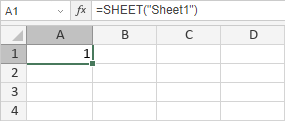

SHEET funkcija
SHEET funkcija je jedna od informacionih funkcija. Koristi se za vraćanje rednog broja radnog lista na osnovu reference.
Sintaksa
SHEET([value])
SHEET funkcija ima sledeći argument:
| Argument | Opis |
|---|---|
| value | Naziv radnog lista ili referenca za koju želite da dobijete broj lista. Ovo je opcioni argument. Ako je value izostavljen, vraća se broj trenutnog radnog lista. |
Napomene
Kako primeniti SHEET funkciju.
Primeri
Slika ispod prikazuje rezultat koji vraća SHEET funkcija.
